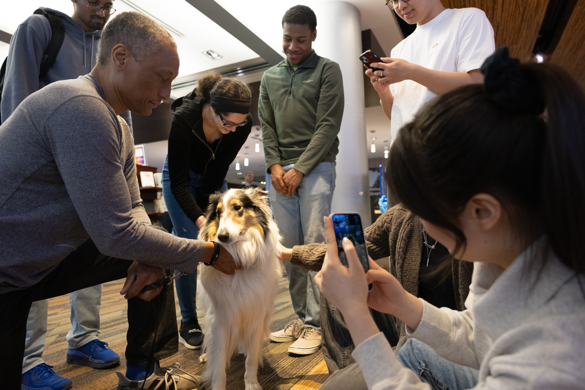

What is Networking
Networking is about building genuine, long-term relationships, not just asking for jobs. As a UMSI student, your classmates, faculty, alumni, and industry partners are all part of your growing professional community. This page will help you learn where to connect with others, how to reach out, and how to maintain meaningful relationships over time.

Why Networking Matters
Building professional connections can significantly impact your career trajectory. Studies show that 70-85% of jobs are filled through networking. Beyond job opportunities, networking helps you:
- Gain industry insights and stay current with trends
- Find mentors who can guide your career development
- Discover opportunities before they're publicly posted
- Build confidence in professional settings
- Access diverse perspectives and experiences
Where to Network
On Campus
- UMSI Career Fairs: Connect with employers specifically seeking UMSI talent
- Student Organizations: Join clubs like SI Student Association, Women in Technology, or Graduate Students in UX
- Coffee Chats: Schedule informal meetings with faculty and guest speakers
- Class Projects: Build relationships with teammates who share your interests
Online Platforms
- LinkedIn: Connect with UMSI alumni and industry professionals
- UMSI Alumni Network: Access the directory through the CDO
- Slack/Discord Communities: Join industry-specific groups
- Professional Conferences: Attend virtual and in-person events in your field

Building Long-Term Relationships
Networking isn't just about making initial contact—it's about nurturing relationships over time. Here are strategies to maintain your professional network:
- Send periodic updates about your achievements and career progress
- Congratulate connections on their accomplishments and promotions
- Share relevant articles or opportunities that might interest them
- Offer help when you can—networking is a two-way street
- Meet in person when possible to strengthen the connection
- Remember personal details they've shared and ask about them
Event Prep Checklist
Use this checklist to prepare for career fairs, info sessions, and networking meetups.
Before the Event
- Research attending companies and people; note 2-3 talking points for each.
- Prepare a 20-30 second elevator pitch summarizing who you are and what you want.
- Update your LinkedIn and have your profile open on your phone or a QR code ready.
- Bring 3-5 printed resumes (if in-person) and a professional notebook and pen.
- Plan professional attire and logistics (arrival time, transport, parking).
At the Event
- Approach representatives with a friendly opener and your elevator pitch.
- Ask concise, thoughtful questions about role expectations, team, or hiring timeline.
- Collect business cards or contact details and jot a quick note about each conversation.
- Be mindful of time—keep conversations focused and offer to follow up with materials.
- Attend panels/sessions and take one actionable takeaway to mention in follow-up messages.
After the Event
- Within 24-48 hours, send personalized follow-up messages referencing your conversation.
- Connect on LinkedIn with a short note (mention event + specific topic you discussed).
- Track contacts, follow-up dates, and next actions in a spreadsheet or notes app.
- Prepare tailored application materials if a role was discussed and submit promptly.
- Set reminders to follow up again after 1-2 weeks if you haven't heard back.